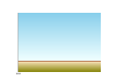
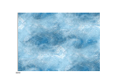

<style>
Syntax
<style>
font-family:Arial <!-- Default font for entire chart
-->
<title>
filter:none; <!-- ...removes the
default drop shadow -->
fill:lime;
stroke:blue;
<x2>
fill:red;
</x2>
<y2>
fill:red;
</y2>
</title>
<grid>
<vertical>
<major>stroke:white;</major>
<minor>stroke:pink;</minor>
</vertical>
<horizontal>
<major>stroke:white;</major>
<minor>stroke:pink;</minor>
</horizontal>
</grid>
<reference>
<vertical>
<major>stroke:red</major>
</vertical>
<horizontal>
<major>stroke:yellow</major>
</horizontal>
</reference>
<label>
<x2>
fill:red
</x2>
<y2>
fill:red
</y2>
</label>
<plotarea>
<!-- <color
opacity="0.2">seagreen</color> -->
<gradient>
<color
offset="0.00" opacity="0.80">blue</color>
<color
offset="0.50" opacity="0.50">skyblue</color>
<color
offset="0.70" opacity="0.50">lightblue</color>
<color
offset="0.75" opacity="0.50">orange</color>
<color
offset="0.80" opacity="0.75">yellow</color>
<color
offset="1.00">green</color>
</gradient>
<!-- <picture>background.jpg</picture> -->
<picture location="topright"
>penguin.png</picture>
<picture
location="bottom" >penguin.png</picture>
<border/>
</plotarea>
<annotation>
<marker>
fill:blue;
stroke-width:2;
stroke:mediumturquoise;
stroke-opacity:0.75;
</marker>
<text>
fill:yellow;
fill-opacity:1;
font-size:24px;
font-weight:bold;
font-family:Technical;
</text>
</annotation>
<series>
<hue>
<initial>270</initial>
<step>10</step>
</hue>
<saturation>
<min>0.4</min>
<max>1.0</max>
<levels>4</levels>
</saturation>
<brightness>
<min>0.5</min>
<max>1</max>
<levels>2</levels>
</brightness>
</series>
</style>
Synopsis
The <style> tag describes what you want the chart to look
like. Rather than specify this information with the data, the data and the style
are kept separate (pretty much). This way, you only have to supply your data to
be charted and a default style will be applied. Most style information is
specified using CSS2 syntax.
The exception is the generation of colors for each data series which just uses
numbers as explained below.
Under the <style> tag you can insert:
- CSS styles that apply
to the text for the entire chart. A useful thing to specify here is the
default font to use for the chart. For example,
font-family:Arial. Anything you specify here can be overridden by the following tags. - a
<title>tag to specify the appearance of the chart and axis titles - a
<grid>tag to specify the appearance of any grid lines - a
<reference>to specify the default appearance of any reference lines. You can override the default on individual reference lines - a
<label>tag to specify the appearance of the axis labels - a
<plotarea>tag to specify the appearance of the plot area - a
<annotation>tag to specify the appearance of any annotations - a
<series>tag to specify how you want the colors of each series to be generated. You can override the generated style on individual series.
<plotarea> tag you can insert (any number of):
- a
<color>tag specifying a color to to use as the plotarea background. Colors can be specified as defined by the color section of the SVG specification (that is, as either pre-defined names or as rgb(r,g,b) triplets). Having said all that, specifying<color>white</color>is pretty typical. The default color is transparent, which looks as though you have drawn the chart on glass. An example follows:

<style>
<plotarea>
<color>lightyellow</color>
</plotarea>
</style> - a
<gradient>tag specifying a gradient to use as the plotarea background. A gradient is a gradual change from one color to another. In addition to color, you can also specify opacity (the reverse of transparency) so a gradient can become progressively more or less transparent. Also, the number of gradient changes is unlimited. For example:
 <style>
<plotarea>
<gradient>
<color offset="0%">skyblue</color>
<color offset="80%">azure</color>
<color offset="81%">sienna</color>
<color offset="82%">wheat</color>
<color offset="100%">olive</color>
</gradient>
</plotarea>
</style> - a
<picture>tag specifying an image to be drawn either on the background or as the background. By specifying thelocationattribute on the tag, the image can be either stretched to fit the plotarea (location="stretch"), tiled over the plotarea (location="tile") or positioned in a particular part of the plotarea (location="center", "top","topright","right"... etc... you get the picture!). By default the image you specify will be scaled to fit within major grid lines. This is usually ok, but you can always specify thewidthandheightattributes to make it the size you want. For example:
 <style>
<plotarea>
<picture>background.jpg</picture>
</plotarea>
</style> - a
<border>tag specifying the style to be applied to the border around the plotarea. For example:

<style>
<plotarea>
<border>stroke-width:15;stroke:mediumorchid</border>
</plotarea>
</style>
The colors, gradients and pictures you specify under the <plotarea> tag are
drawn in order of appearance. This could have unexpected consequences. For
example, specifying <color> after <picture>
will cause the picture to be obliterated by the color. So, generally, you should
specify <picture> tags last.
The border is always drawn on top and is clipped to the plotarea size. This
is done to keep the ends of each series line neatly clipped to the plot area.
Consequently, if you specify a fill:color style in the <border>
tag you will obliterate the entire chart. You probably don't want to do that.
<series> tag you can control how colors are
generated to plot each data series. Basically, you specify the starting hue,
saturation and brightness values and the color generation algorithm will try to
generate colors that are not too visually close together. That is, the
first color may be intense red and the second may be a subdued green. The idea
is that if the chart is ever printed in black and white, you should still be
able to distinguish the different data series - the red will look like black and
the green will look gray.
Under the <series> tag you can specify:
- a
<hue>tag to specify the initial hue and stepping value. A value from 0 (red), cycling to 360 (red again!) is standard HSV notation. Numbers outside this range are treated as modulus 360. You can also specify a step. So<initial>270</initial>and<step>10</step>generates hue values as follows: 270, 280, 290, ..., 350, 0, 10, 20, and so on. The default is:
<hue>
<initial>250</initial>
<step>47</step>
</hue>
- a
<saturation>tag to specify the minimum and maximum saturation values (0.0 to 1.0) and the number of saturation values to cycle through. The default is:
<saturation>
<min>0.6</min>
<max>1.0</max>
<levels>5</levels>
</saturation>
- a
<brightness>tag to specify the minimum and maximum brightness values (0.0 to 1.0) and the number of brightness values to cycle through. The default is:
<brightness>
<min>0.4</min>
<max>1.0</max>
<levels>5</levels>
</brightness>